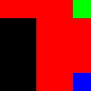
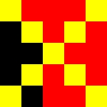

Manipulación de pixels con Python-Fu
Usando GIMP y el complemento que permite crear plug-ins en Python podemos hacer manipulación a bajo nivel de los pixels de una imagen.
PixelRegion
PixelRegion permite realizar una abstracción sobre una imagen de forma tal de verla como una región de pixeles. Cada posición x,y de la región corresponde a un pixel de la imagen. En el caso de las imágenes RGB, cada pixel tiene 3 valores. En Python-Fu estos valores son representados con un string de 3 caracteres en el que cada caracter es uno de aquellos que tiene su número de orden (función ord) entre y 255.
Los siguientes ejemplos son una demostración sencilla de como trabajar con PixelPerfect para manipular imágenes. En el primer ejemplo se leen los valores de algunos de los pixeles de la imagen y en el segundo se escriben otros.
Ejemplo 1 (lectura)
La siguiente imagen de 5x5 pixeles (ampliada) será usada para este ejemplo:

Imagen original
La función pixel es la que se ejecutará cuando ejecutemos el plug-in creado para este ejemplo. No se ingresan parámetros desde la interfaz gráfica del mismo, pero la función recibe 2 argumentos. Objetos que representan la imagen y la capa (layer) a procesar.
def pixels(img, layer):
w = layer.width
h = layer.height
pr = layer.get_pixel_rgn(0, 0, w, h)
print "Valores de los pixeles de las esquinas de la imagen"
r,g,b = pr[0,0]
print [ord(x) for x in r,g,b]
r,g,b = pr[0,4]
print [ord(x) for x in r,g,b]
r,g,b = pr[4,0]
print [ord(x) for x in r,g,b]
r,g,b = pr[4,4]
print [ord(x) for x in r,g,b]
layer.update(0, 0, w, h)
layer.flush()
gimp.displays_flush()
El ejemplo es sencillo y lo que hace es instanciar una PixelRegion tan grande como la capa (layer). Luego los diferentes pixeles de la misma pueden accederse mediante sus coordenadas: pr[x,y].
Se muestran los valores RGB de cada uno de los puntos del ejemplo.
Código fuente: pixels-read.py
Ejemplo 2 (escritura)
En una porción de código que empieza de forma similar a la del ejemplo anterior podemos ver que una vez que hemos obtenido la PixelRegion que nos interesa, podemos escribir pixeles en ella.
El siguiente ejemplo aplicado sobre la imagen del ejemplo anterior dibuja una equis amarilla:
def pixels_write(img, layer):
w = layer.width
h = layer.height
pr = layer.get_pixel_rgn(0, 0, w, h)
yellow_rgb = (255,255,0)
yellow_str = chr(yellow_rgb[0]) + chr(yellow_rgb[1]) + chr(yellow_rgb[2])
for i in xrange(5):
pr[i,i] = yellow_str
pr[4-i,i] = yellow_str
layer.update(0, 0, w, h)
layer.flush()
gimp.displays_flush()

Imagen procesada con el código del ejemplo 2
Código fuente: pixels-write.py
Links
- Más artículos relacionados con Python-Fu.
- Experimentos con PixelRegion.
- API en C de PixelRegion.
Comentarios
Comments powered by Disqus